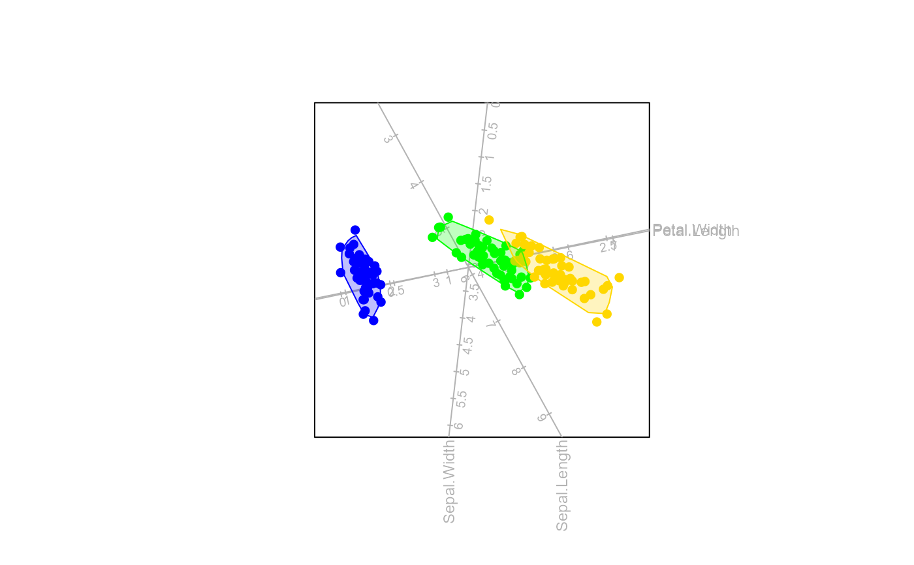

Create alpha bags
alpha.bags.RdThis function produces \(\alpha\)-bags, which is a useful graphical summary of the scatter plot. The alpha-bag refers to a contour which contains \(\alpha\)% of the observations.
Usage
alpha.bags(bp, alpha = 0.95, which = NULL, col = ez.col[which], lty = 1,
lwd = 1, max = 2500, trace = TRUE, opacity = 0.25, outlying=FALSE)Arguments
- bp
an object of class
biplot.- alpha
numeric vector between 0 and 1 to determine coverage of the bag (\(\alpha\)), with default
0.95.- which
numeric vector indicating the selection of groups or classes to be fitted with \(\alpha\)-bags.
- col
vector of colours for the \(\alpha\)-bags. Multiple \(\alpha\) bags for one group will be displayed in the same colour.
- lty
vector of line types for the \(\alpha\)-bags. The same line type will be used per value of \(\alpha\).
- lwd
vector of line widths for the \(\alpha\)-bags. The same line width will be used per value of \(\alpha\).
- max
maximum number of samples to include in \(\alpha\)-bag calculations, with default 2500. If more samples are in the group, a random sample of size max is taken for the computations.
- trace
logical, indicating progress of computation.
- opacity
level of opacity, with default
0.5.- outlying
logical indicating whether only outlying points should be plotted. Note the
whichargument may be overwritten whenTRUE
Value
A list with the following components is available:
- alpha.bags
list of coordinates for the \(\alpha\)-bags for each group.
- col
vector of colours for the \(\alpha\)-bags.
- lty
vector of line types for the \(\alpha\)-bags.
- lwd
vector of line widths for the \(\alpha\)-bags.
References
Gower, J., Gardner-Lubbe, S. & Le Roux, N. (2011, ISBN: 978-0-470-01255-0) Understanding Biplots. Chichester, England: John Wiley & Sons Ltd.
Examples
biplot (iris[,1:4]) |> PCA(group.aes=iris[,5]) |> alpha.bags(alpha=0.95) |> plot()
#> Computing 0.95 -bag for setosa
#> Computing 0.95 -bag for versicolor
#> Computing 0.95 -bag for virginica

biplot (iris[,1:4],group.aes=iris[,5]) |> PCA() |> alpha.bags(alpha=0.95) |> plot()
#> Computing 0.95 -bag for setosa
#> Computing 0.95 -bag for versicolor
#> Computing 0.95 -bag for virginica